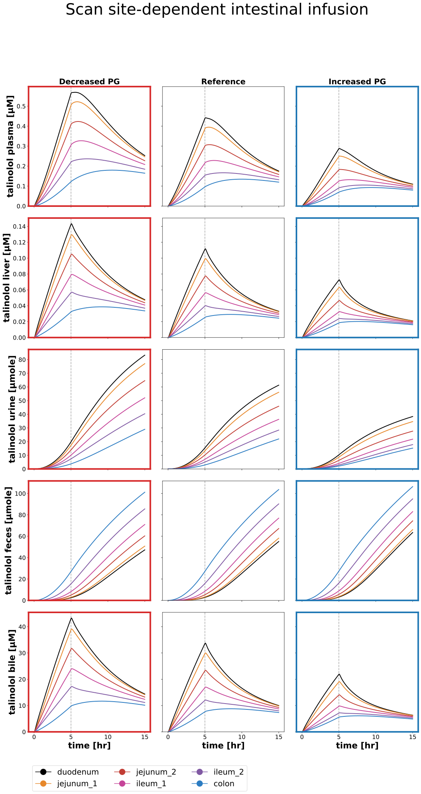
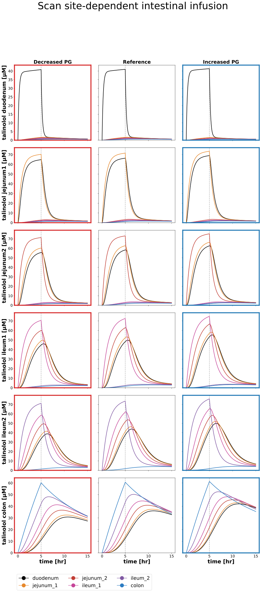
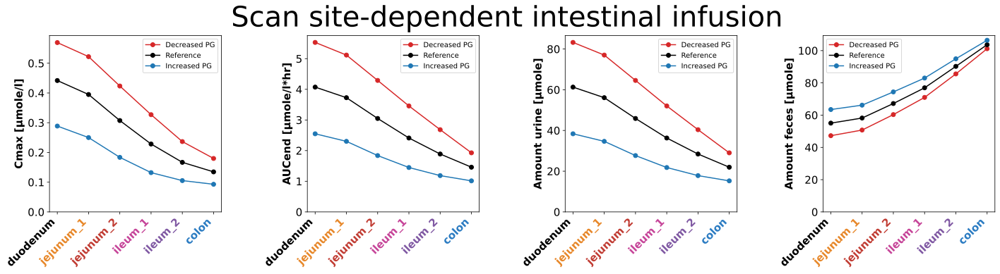

Overview
Models
| model | source |
|---|---|
| model | talinolol_body_flat.xml |
Datasets
The experiment has no datasets.
Figures (3)






Code
"""Scan of the site of an intestinal infusion of talinolol."""
from typing import ClassVar, override
import matplotlib.lines as mlines
import matplotlib.pyplot as plt
import numpy as np
import pandas as pd
from sbmlsim import Q
from sbmlsim.plot.serialization_matplotlib import FigureMPL
from sbmlsim.simulation import Change, Simulation
from pkdb_models.models.talinolol import MODEL
from pkdb_models.models.talinolol.experiments.base_experiment import (
TalinololSimulationExperiment,
)
class SiteDependencyScan(TalinololSimulationExperiment):
"""Scan the effect of the site of an intestinal infusion on talinolol pharmacokinetics."""
#: pharmacokinetic parameters of the simulations by simulation key, set by
#: `figures_mpl`
pk_dfs: dict[str, pd.DataFrame]
scan_sites: ClassVar[list[str]] = [
"duodenum",
"jejunum_1",
"jejunum_2",
"ileum_1",
"ileum_2",
"colon",
]
tend_infusion = 300 # [min]
pg_map: ClassVar[dict[str, float]] = {
"Decreased PG": 0.5,
"Reference": 1,
"Increased PG": 2,
}
pg_colors: ClassVar[dict[str, str]] = {
"Decreased PG": "tab:red",
"Reference": "black",
"Increased PG": "tab:blue",
}
@override
def simulations(self) -> dict[str, Simulation]:
simulations = {}
for site in self.scan_sites:
for pg_key in self.pg_map:
simulations[self.to_sid(f"scan_infusion_{site}_{pg_key}")] = Simulation(
time_unit="min",
end=self.tend_infusion + 2 * self.tend_infusion,
preinit_changes={
**self.default_changes(),
f"GU__Ri_tal_{site}": Q(100, "mg")
/ Q(self.tend_infusion, "min"),
"GU__f_pgp": Q(self.pg_map[pg_key], "dimensionless"),
},
changes=[
Change(
self.tend_infusion,
{
**self.default_changes(),
f"GU__Ri_tal_{site}": Q(0, "mg/min"),
},
)
],
)
return simulations
@override
def figures_mpl(self) -> dict[str, FigureMPL]:
self.pk_dfs = self.calculate_talinolol_pk()
return {
**self.figures_mpl_timecourses(),
**self.figures_mpl_pharmacokinetics(),
}
def figures_mpl_timecourses(self) -> dict[str, FigureMPL]:
"""Timecourse plots for key variables depending on the infusion site."""
sids_all = [
"[Cve_tal]",
"[LI__tal]",
"Aurine_tal",
"Afeces_tal",
"LI__Cbile_tal",
]
sids_gut = [
"[Cduodenum_tal]",
"[GU__tal_jejunum_1]",
"[GU__tal_jejunum_2]",
"[GU__tal_ileum_1]",
"[GU__tal_ileum_2]",
"[GU__tal_colon]",
]
figures = {}
for name, sids in [("all", sids_all), ("intestine", sids_gut)]:
f, axes = plt.subplots(
nrows=len(sids),
ncols=len(self.pg_map),
figsize=(6 * len(self.pg_map), 6 * len(sids)),
sharey="row",
sharex="col",
)
f.subplots_adjust(wspace=0.1, hspace=0.1)
f.suptitle(
"Scan site-dependent intestinal infusion",
fontsize=self.suptitle_font_size,
)
for krow, sid in enumerate(sids):
ymax = 0.0
for kcol, pg_key in enumerate(self.pg_map):
ax = axes[krow, kcol]
# the frame shows the P-gp activity
facecolor = self.pg_colors[pg_key]
if facecolor != "black":
for axis in ["top", "bottom", "left", "right"]:
ax.spines[axis].set_linewidth(4)
ax.spines[axis].set_color(facecolor)
# end of the infusion [min] -> [hr]
ax.axvline(
x=self.tend_infusion / 60, color="darkgrey", linestyle="--"
)
for site in self.scan_sites:
res = self.results[
self.to_sid(f"task_scan_infusion_{site}_{pg_key}")
]
# the state after the end of the infusion only
_, _, top = self.plot_timecourse(
ax, res, sid, self.sites_color[site]
)
ymax = max(ymax, top)
if krow == 0:
ax.set_title(
pg_key, fontdict={"fontsize": 20, "fontweight": "bold"}
)
if krow == len(sids) - 1:
ax.set_xlabel(
f"{self.label_time} [{self.units['time']}]",
fontdict=self.font,
)
ax.tick_params(axis="x", labelsize=self.tick_font_size)
ax.tick_params(axis="y", labelsize=self.tick_font_size)
if kcol == 0:
ax.set_ylabel(
f"{self.labels[sid]} [{self.units[sid]}]",
fontdict=self.font,
)
ax.set_ylim(bottom=0.0)
# the panels of a row share the maximum
for ax in axes[krow]:
ax.set_ylim(top=1.05 * ymax)
# legend of the infusion sites
handles = [
mlines.Line2D(
[],
[],
alpha=1,
label=site,
linestyle="solid",
marker="o",
color=self.sites_color[site],
markersize=15,
)
for site in self.scan_sites
]
axes[len(sids) - 1, 0].legend(
handles=handles,
ncol=3,
loc="upper left",
bbox_to_anchor=(0.0, -0.25),
prop={"size": 20},
)
figures[name] = f
return figures
def figures_mpl_pharmacokinetics(self) -> dict[str, FigureMPL]:
"""Visualize dependency of pharmacokinetics parameters."""
parameters = [
"cmax",
"auc_last",
"Aurine_tal",
"Afeces_tal",
]
f, axes = plt.subplots(nrows=1, ncols=4, figsize=(6 * 4, 6 * 1))
f.subplots_adjust(wspace=0.5, bottom=0.3)
f.suptitle(
"Scan site-dependent intestinal infusion", fontsize=self.suptitle_font_size
)
axes = axes.flatten()
# positions of the infusion sites
x = np.linspace(start=0, stop=len(self.scan_sites), num=len(self.scan_sites))
for k, pk_key in enumerate(parameters):
ax = axes[k]
for pg_key in self.pg_map:
# the infusion is a single simulation, one point (the median
# and the quantiles of the draws in a run over them)
y, lower, upper = (np.zeros_like(x) for _ in range(3))
for ksite, site in enumerate(self.scan_sites):
df = self.pk_dfs[self.to_sid(f"scan_infusion_{site}_{pg_key}")]
median, low, high = self.pk_summary(
df, pk_key, self.pk_units[pk_key]
)
y[ksite] = median.magnitude[0]
if low is not None and high is not None:
lower[ksite] = low.magnitude[0]
upper[ksite] = high.magnitude[0]
if self.uncertainty is not None:
ax.fill_between(
x,
lower,
upper,
color=self.pg_colors[pg_key],
alpha=self.band_alpha,
linewidth=0,
)
ax.plot(
x,
y,
marker="o",
linestyle="-",
color=self.pg_colors[pg_key],
markeredgecolor=self.pg_colors[pg_key],
label=pg_key,
)
ax.tick_params(axis="x", labelsize=self.tick_font_size)
ax.tick_params(axis="y", labelsize=self.tick_font_size)
ax.set_ylabel(
f"{self.pk_labels[pk_key]} [{self.pk_units[pk_key]}]",
fontdict=self.scan_font,
)
ax.set_xticks(
ticks=x,
labels=self.scan_sites,
rotation=45,
ha="right",
fontweight="bold",
)
for site, ticklabel in zip(
self.scan_sites, ax.xaxis.get_ticklabels(), strict=True
):
ticklabel.set_color(self.sites_color[site])
ax.set_ylim(bottom=0.0)
ax.legend()
return {"pk": f}
if __name__ == "__main__":
MODEL.run_experiments(SiteDependencyScan, output_dir="sitedependencyscan")